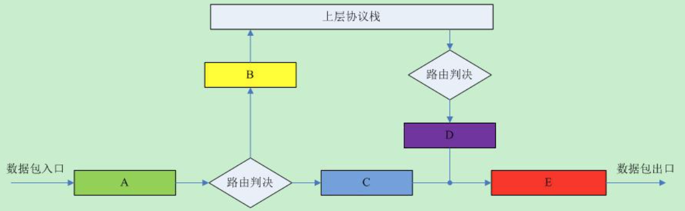
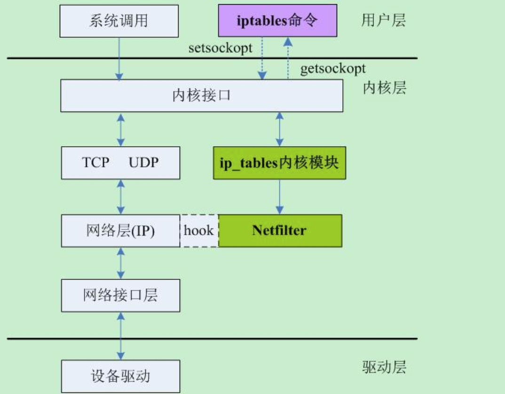
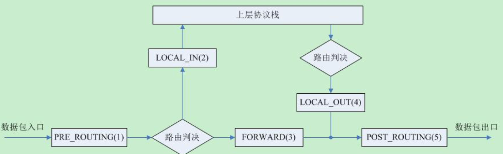

在工作中常常涉及到防火墙的概念，基本网络不通或者服务无法连接首先就会想到是否是防火墙的原因。当然这里所说的防火墙是Linux系统内核继承的IP信息包过滤系统Netfiter/iptables。
SNAT、DNAT、MASQUERADE
了解Linux防火墙之前，需要对有些网络基础的概念有所了解。iptables能够灵活的做各种地址转换(NAT)，NAT主要又分为SNAT、DNAT。
SNAT (source network address translation)，即源地址目标转换。内部地址要访问公网上的服务时（如web访问），内部地址会主动发起连接，由路由器或者防火墙上的网关对内部地址做个地址转换，将内部地址的私有IP转换为公网的公有IP，网关的这个地址转换称为SNAT，主要用于内部共享IP访问外部。
DNAT (destination network address translation），即目标网络地址转换。当内部需要提供对外服务时（如对外发布web网站），外部地址发起主动连接，由路由器或者防火墙上的网关接收这个连接，然后将连接转换到内部，此过程是由带有公网IP的网关替代内部服务来接收外部的连接，然后在内部做地址转换，此转换称为DNAT，主要用于内部服务对外发布。
MASQUERADE，地址伪装，在iptables中有着和SNAT相近的效果，但也有一些区别。使用SNAT的时候，出口ip的地址范围可以是一个，也可以是多个。MASQUERADE作用是，从服务器的网卡上，自动获取当前ip地址来做NAT，就不用手动指定转换的目的IP了，实现了动态的SNAT。
Linux防火墙的应用
Linux防火墙iptables的用途主要包括NAT路由、安全防护、透明代理等。
- 企业或者网吧能够利用iptables作为企业的NAT路由器，代替传统的路由器供企业内部员工上网，节约成本并能有效控制
- 提供外网到内网的IP映射，能够使得内部Web服务器对外提供服务，即DNAT
- iptables可以防止轻量级的DDOS攻击，如ping攻击以及SYN洪水攻击
- iptables可以结合squid作为内部上网的透明代理，不需要再浏览器里配置代理服务器信息，iptables+squid的透明代理可以将客户端的请求重定向到代理服务器的端口。
Netfilter 与 iptables
Netfiter/iptables是IP信息包过滤系统的一个整体的两个模块。 Netfiter是内核的模块实现， iptables是上层的操作工具。
Netfiter是Linux核心中的一个通用结构，它要么被直接编译进内核，要么被包含在模块中，运行在内核空间。
iptables提供一些列的表，每个表由若干条链组成，每条链中可以由一条或薯条规则组成。 iptables是一个管理内核包过滤的工具，可以加入、插入或者删除核心包过滤表中的规则。它运行在用户控件，真正执行这些过滤规则的是Netfilter。
网络数据的流向
我们知道TCP/IP四层网络模型自下而上包括：链路层、网络层、传输层、应用层。在数据的发送过程中，从上至下依次是加头的过程，每到达一层数据就被会加上该层的头部；与此同时，接受数据方就是个剥头的过程，从网卡收上包来之后，在往协议栈的上层传递过程中依次剥去每层的头部，最终到达用户那儿的就是裸数据了。
数据在网络协议栈中的基本流程如下：

对于收到的每个数据包，都从“A”点进来，经过路由判决，如果是发送给本机的就经过“B”点，然后往协议栈的上层继续传递；否则，如果该数据包的目的地是不本机，那么就经过“C”点，然后顺着“E”点将该包转发出去。
对于发送的每个数据包，首先也有一个路由判决，以确定该包是从哪个接口出去，然后经过“D”点，最后也是顺着“E”点将该包发送出去。
Netfilter是Linux 2.4.x引入的一个子系统，它作为一个通用的、抽象的框架，提供一整套的hook函数的管理机制，使得诸如数据包过滤、网络地址转换(NAT)和基于协议类型的连接跟踪成为了可能。Netfilter在内核中位置如下图所示：

上图很直观的反应了用户空间的iptables和内核空间的基于Netfilter的iptables模块之间的关系和其通讯方式，以及Netfilter在这其中所扮演的角色。
Netfilter在netfilter_ipv4.h中将这个五个点重新命了个名，如下图所示:

即对于数据包而言的几个流向分别为：
- PREROUTING –> FORWARD –> POSTROUTING
- PREROUTING –> INPUT –> OUTPUT –> POSTROUTING
上述两种主要流向就是iptables的两种工作模式：NAT路由、主机防火墙。
参考阅读
洞悉linux下的Netfilter&iptables：什么是Netfilter？
IPtables中SNAT、DNAT和MASQUERADE的区别
《构建高可用Linux服务器》 Ch8 Linx防火墙及系统安全